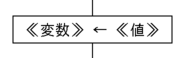
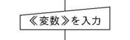
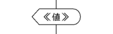
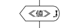
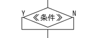
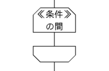
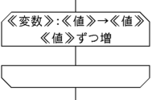
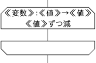
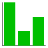

PyPENの文法
値
数は整数と実数が区別される。小数部分を含まない数は整数とする。例：3.0は実数
文字列は「」または""で囲む。
真偽値はtrueとfalseのどちらかである。
[1,2,3]のような配列も使える。
変数
変数を宣言することはできない。値を代入した時点で変数は生成される。
変数名の後に番号をいれた[ ]をつけて配列を使うことができる。 二次元以上の配列はa[1,2]などのように使う。
計算
計算の演算子
+,-,*,/,//,%,**が使える。*は掛け算，/と//は割り算，%は割り算の余り（整数どうしに限る）を表す。 ただし/の割り算は余りを出さない割り算（結果は実数）で，//の割り算は商の整数部分（結果は整数）を表す。 この点はDNCLと異なるので注意していただきたい。 また，**はべき乗を表す。
条件式
=,≠,!=,>,<,≧,>=,≦,<=が使える。!=は≠，>=は≧，<=は≦とそれぞれ同じである。 条件式を「または」「かつ」でつないだり，「でない」を後置することで否定することができる。 「または」「かつ」を使った条件は左から順に評価される（「でない」は優先的に結合する）。
文字列結合
「と」で文字列を結合することができる。数値は文字列に変換してから結合される。 例：「こん」と「にちは」→「こんにちは」。1と2→12
関数
次のような関数を使うことができる。文字列の位置や番号は0から始まる。
| 関数 | 意味 | 使用例 |
|---|---|---|
| abs(《値》) | 絶対値 | abs(-3)→3 |
| random(《整数》) | 乱数 | random(5)→0以上5以下の乱数（整数） |
| ceil(《実数》) | 小数部分切り捨て | ceil(3.5)→3 |
| floor(《実数》) | 小数部分切り上げ | floor(3.5)→4 |
| round(《実数》) | 小数部分四捨五入 | round(3.5)→4 |
| sin(《実数》) | 三角関数のサイン（単位はラジアン） | sin(0)→0 |
| cos(《実数》) | 三角関数のコサイン（単位はラジアン） | cos(0)→1 |
| tan(《実数》) | 三角関数のタンジェント（単位はラジアン） | tan(0)→0 |
| asin(《実数》) | 逆三角関数のアークサイン（単位はラジアン） | asin(1)→1.5707963267948966 |
| acos(《実数》) | 逆三角関数のアークコサイン（単位はラジアン） | acos(0)→1.5707963267948966 |
| atan(《実数》) | 逆三角関数のアークタンジェント（単位はラジアン） | atan(1)→0.7853981633974483 |
| atan2(《実数》,《実数》) | 逆三角関数のアークタンジェント（単位はラジアン） | atan(1,0)→1.5707963267948966 |
| sqrt(《実数》) | ルート | sqrt(2)→1.414… |
| log(《実数》) | 自然対数 | log(10)→2.302… |
| exp(《実数》) | 指数関数（底は自然対数の底） | exp(1)→2.718… |
| pow(《実数》,《実数》) | 累乗 | pow(2,3)→8 |
| length(《文字列》) | 文字列の長さ（文字数） | length(「こんにちは」)→5 |
| length(《配列》) | 配列の長さ | length({1,2,3,4,5})→5 |
| append(《文字列》,《文字列》) | 文字列結合 | append(「Wa」,「PEN」)→「WaPEN」 |
| substring(《文字列》,《開始位置》) | 部分文字列（最後まで） | substring(「こんにちは」,2)→「にちは」 |
| substring(《文字列》,《開始位置》,《長さ》) | 部分文字列（長さ指定） | substring(「こんにちは」,2,1)→「に」 |
| split(《文字列》,《区切文字列》) | 文字列分割 | split(「a:b:c:d」,「:」)→「a」,「b],「c」,「d」（配列） |
| extract(《文字列》,《区切文字列》,《番号》) | 文字列分割（番号指定） | extract(「a:b:c:d」,「:」,2)→「c」 |
| insert(《文字列》,《位置》,《文字列》) | 文字列挿入 | insert(「こんは」,2,「にち」)→「こんにちは」 |
| replace(《文字列》,《位置》,《長さ》,《文字列》) | 文字列置換 | replace(「こんにちは」,2,2,「ばん」)→「こんばんは」 |
| 整数(《値》) | 整数への変換 | 整数(3.5)→3，整数("3.14")→3 |
| 実数(《値》) | 実数への変換 | 実数(3)→3.0，実数("3.14")→3.14 |
| 文字列(《値》) | 文字列への変換 | 文字列(3.5)→「3.5」，文字列(1=1)→「true」 |
| 真偽(《値》) | 真偽への変換 | 真偽(0)→false，整数(1)→true |
代入
《変数》←《値》

{ }や[ ]を使って，配列にまとめて値を代入することができる。
a←[0,1,2,3,4,5]
入力
《変数》に整数を入力する

「整数」の部分は「実数」「文字列」「真偽」にすることもできる。
出力
《値》を表示する

《値》を改行無しで表示する

《値》に配列を指定すると，配列の全要素が表示される。
分岐（選択）
もし《条件》ならば：
《命令》
もし《条件》ならば：
《命令》
そうでなければ：
《命令》

ループ
〜の間
《条件》の間繰り返す：
《命令》

増やしながら・減らしながら
《変数》を《値》から《値》まで《値》ずつ増やしながら繰り返す：
《命令》

《変数》を《値》から《値》まで《値》ずつ減らしながら繰り返す：
《命令》

グラフィック関係などの命令
| 命令 | 補足 |
|---|---|
| 描画領域開く(《幅》,《高さ》) | 1つしか開けない |
| 描画領域閉じる() | |
| 描画領域全消去() | |
| 線色設定(《赤》,《緑》,《青》) | 各色の数は0〜255 |
| 塗色設定(《赤》,《緑》,《青》) | 文字の色もこれ |
| 線太さ設定(《太さ》) | |
| 文字サイズ設定(《サイズ》) | |
| 文字描画(《文字列》,《x》,《y》) | (x,y)は文字列の左下の座標 |
| 線描画(《x1》,《y1》,《x2》,《y2》) | |
| 矩形描画(《x》,《y》,《幅》,《高さ》) | (x,y)は矩形の左上の座標 |
| 矩形塗描画(《x》,《y》,《幅》,《高さ》) | |
| 円描画(《x》,《y》,《半径》) | |
| 円塗描画(《x》,《y》,《半径》) | |
| 棒グラフ描画(《幅》,《高さ》,《値の配列》) | 棒グラフ描画(100,100,[30,10,20])→ |
| 線グラフ描画(《幅》,《高さ》,《値の配列》) | 線グラフ描画(100,100,[[30,10,20],[10,30,20]])→ |
| 《ミリ秒数》 ミリ秒待つ | |
| 変数を確認する | 全変数を表示する |
グラフ描画の《値の配列》は《値の配列の配列》でも良い。
関数・手続きの定義
注意：関数や手続きを定義したプログラムについては，フローチャートの実装がまだできていない。 この状態で間違ってフローチャートを変更するとプログラムがごそっと消えてしまうので， 関数や手続きを定義するプログラムではフローチャートの表示をしないことをお勧めします。
関数 hoge(x)：
…
《値》を返す
手続き hoge(x)：
…
手続きを抜ける
…
関数は値を返さないとエラーになる。手続きは値を返すことができない。 関数・手続きともに，引数を取らない場合であってもカッコが必要（定義するときも呼び出すときも）。
Python風のインデントが合ってないとエラーになります。インデントする前の行末は「：」が必要です。